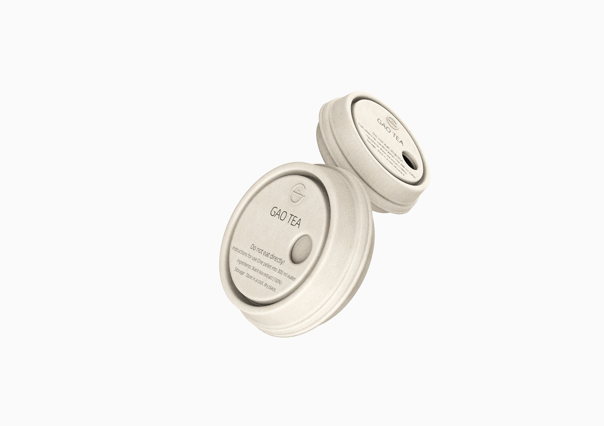
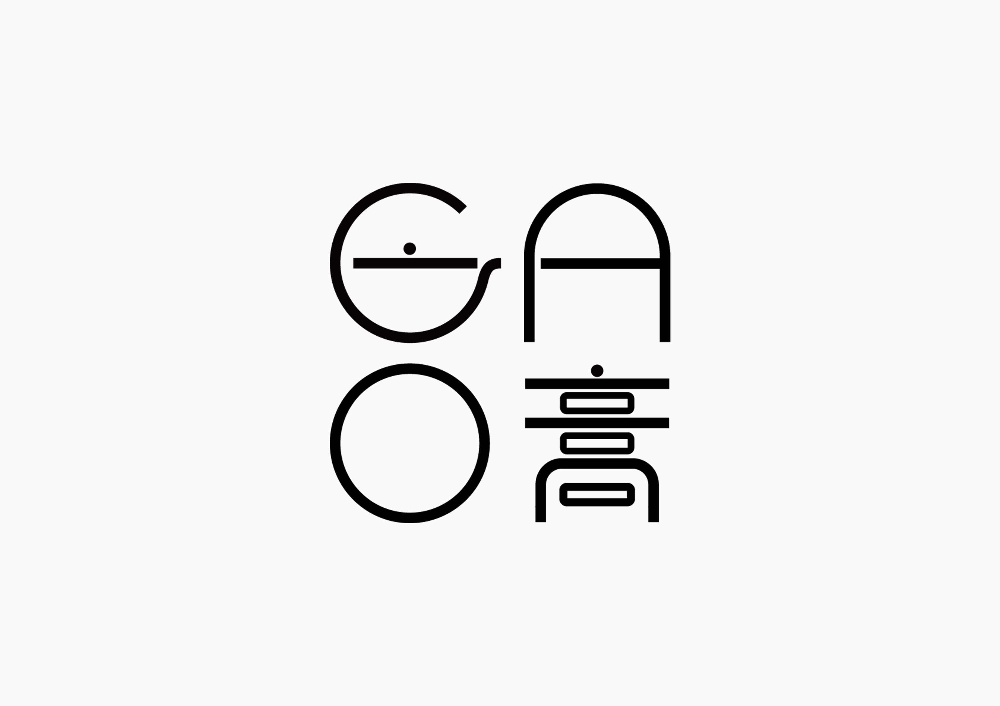
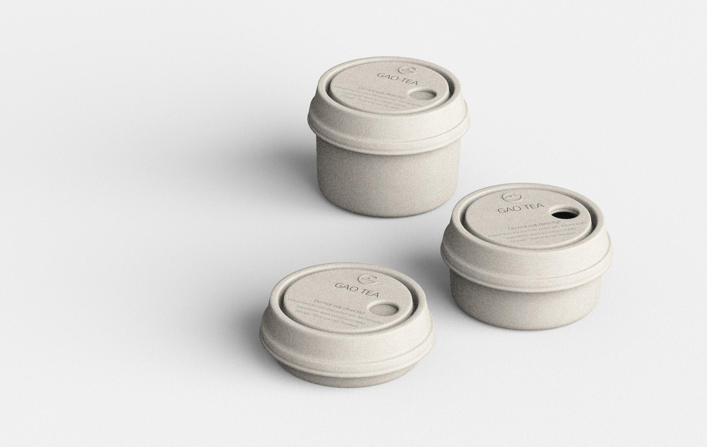

Work · Commercial
GAO TEA
A zero-waste tea brand built around Chinese tea paste.
A zero-waste tea brand built around Chinese tea paste — a solid concentrate that dissolves instantly in hot water, leaving no leaf residue. The design challenge was to create packaging that matched the product's ecological ambition.

The challenge
The brief was to reduce packaging without losing the protection tea needs, and to express two qualities at once: the convenience of an instant product and the depth of a traditional one.
- Reduce individual packaging without compromising moisture protection
- Zero-waste structure — no adhesives, minimal material
- Scalable container system — one lid fits multiple body sizes
- Express the duality of convenient and traditional through form


The packaging
The packaging is formed from dry-pressed moulded pulp — no glue, no complex structure, fully recyclable. A rotating dispensing lid lets users access tea paste without opening the container fully, preserving freshness and reducing exposure.

The brand
The brand name GAO (膏) — meaning paste — shares its pronunciation with the Chinese word for high quality. The logo fuses the Latin letters G, A, O with the Chinese character 膏, creating a mark that holds both traditions simultaneously.